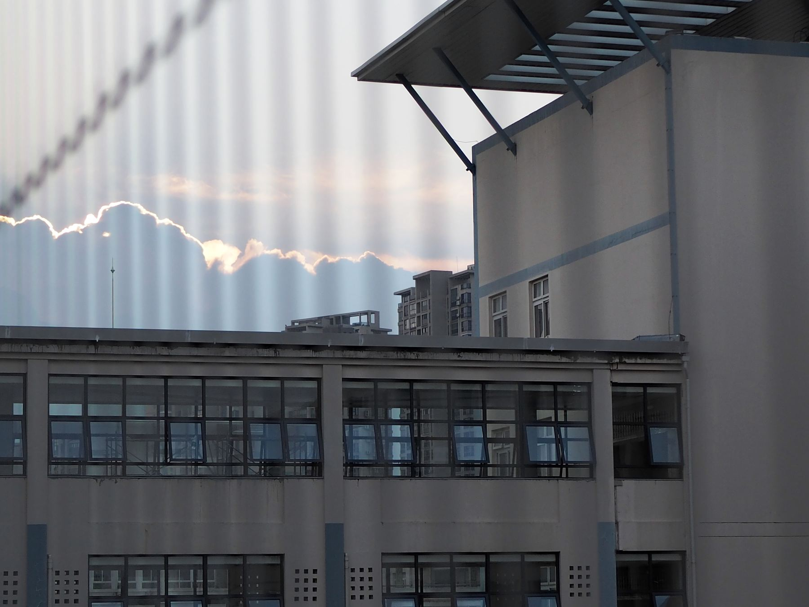
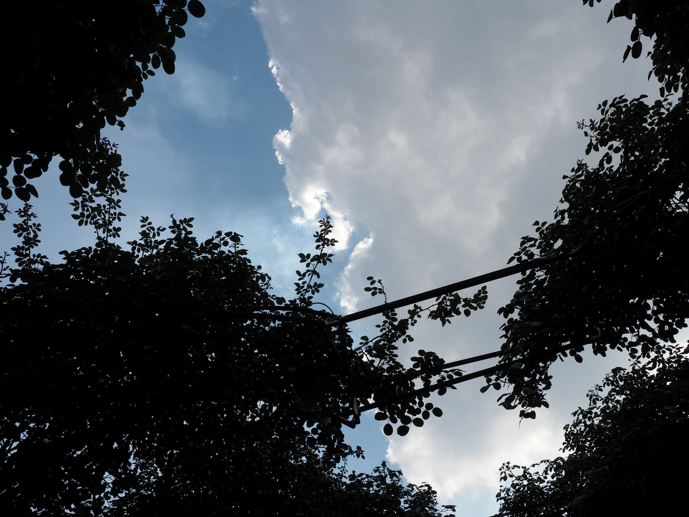
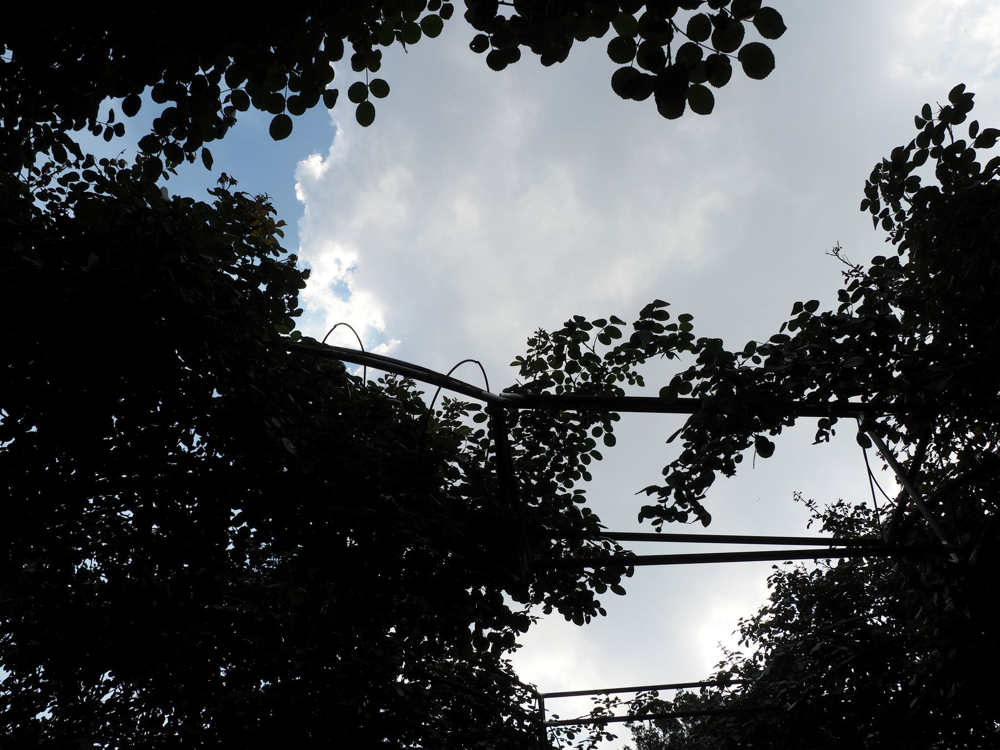
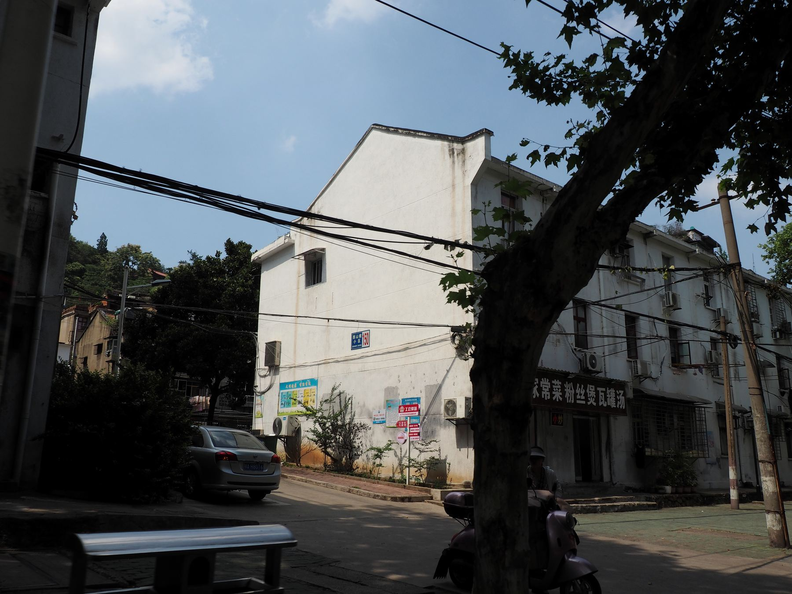

群鸟The flock
SKY — Birds, Weather, Concrete
我拍屋顶上的鸟拍了一年。
它们比人更早决定天气：云压低，鸟先走；风转向，鸟最后动。
I photographed the birds on the rooflines for a full year. They decide the weather before we do: when the cloud drops the birds leave first; when the wind turns, the birds move last.
一张闪电拍了六次，第五次才有形状。









街